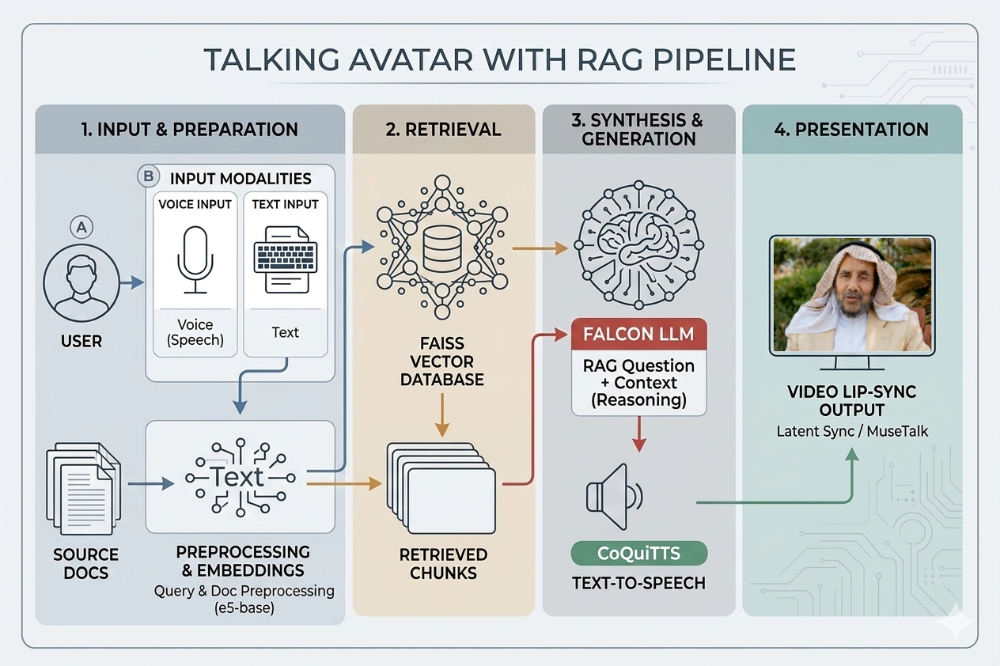

An AI system that retrieves knowledge from documents and delivers answers through a lip-synced talking avatar with cloned voice.

User speaks or types a query. Source documents are chunked and embedded into a vector store.
The query is matched against document embeddings via FAISS to find the most relevant passages.
Falcon LLM generates an answer from retrieved context. CoquiTTS converts it to cloned speech.
Audio drives a lip-sync model to animate the avatar, producing a realistic talking video.
This system combines RAG with text-to-speech voice cloning and video lip-sync to create an interactive knowledge interface. The source material is a book on Emirati folk medicine (الطبيب الشعبي), documenting traditional healing practices. The avatar serves as a digital narrator, preserving this cultural knowledge in an engaging format.